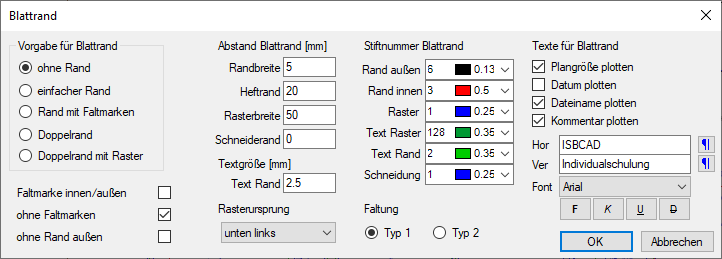
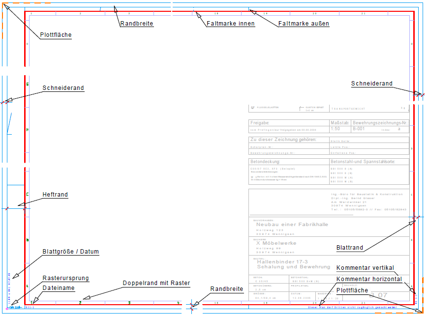

Folienbelegung: Wenn AutFol eingestellt ist, wird der Blattrand in Folie 0 abgelegt.
Konfiguration und Erzeugen eines Blattrands. Öffnet den Dialog Blattrand.
Wenn Sie die Plotfläche ändern, müssen Sie nachträglich auch den Blattrand anpassen.
Optionen im Dialog "Blattrand"
Die gewählte Darstellung wird mit den eingestellten Parametern auf die aktuelle Plotfläche gezeichnet.
 |
Blattrand-Elementbezeichnungen
 |
Vorgabe für Blattrand
Auswahl eines Blattrandtyps.
ohne Rand Blendet den Blattrand in der Zeichnung aus. Einfacher Rand Die Grenze der Plotfläche wird mit einer Linie (Rand außen) versehen. Rand mit Faltmarken Es wird ein einfacher Rand mit zusätzlichen Markierungen für die Faltung erzeugt. Doppelrand Zusätzlich zum äußeren Rand wird ein innerer Rand mit Faltmarken erzeugt. Doppelrand mit Raster Innerhalb des inneren Randes wird ein Raster dargestellt. Textgröße [mm] / Text Rand Angabe der Textgröße der am Blattrand angezeigten Texte. Siehe Dialogbereich Texte für Blattrand. |
Abstand Blattrand
Randbreite Breite des Randes in Millimeter. Heftrand Breite des Heftrandes in Millimeter. Raster Breite des Rasters in Millimeter. Schneiderand Breite des Schneiderands in Millimeter. Beachten Sie, dass die Plotfläche um den zweifachen Schneiderand in X- und Y-Richtung vergrößert werden muss, da auch diese Linien innerhalb der Plotfläche gezeichnet werden.
|

Stiftnummer Blattrand
Auswahl der Stiftnummern für verschiedene Blattrand-Elemente.
Texte für Blattrand
Zum eigentlichen Blattrand können noch Texte automatisch erzeugt werden, die auf den inneren Rand geschrieben werden. Die Auswahl der Texte kann variabel kombiniert werden.
Die Texte werden an den folgenden Stellen platziert:
Plangröße plotten Unten links, vertikal. Datum plotten Unten links, vertikal. Dateiname plotten Unten links, horizontal. Kommentar plotten Unten rechts, es stehen zwei Texte zur Verfügung. Tragen Sie die gewünschten Informationen in die zugehörigen Eingabefelder ein. Mit ¶ können Sie Sonderzeichen einfügen. Hor (Kommentar) Eingabe des Textes, der in horizontaler Richtung geschrieben wird. Ver (Kommentar) Eingabe des Textes, der in vertikaler Richtung geschrieben wird. Font / Textauszeichnung Auswahl der Schriftart und der Textauszeichnung [fett, kursiv, unterstrichen und durchgestrichen] für die unter Hor und Ver eingegebenen Texte. |
Faltmarken innen/außen
Wenn Sie Faltmarken innen/außen wählen, werden die Faltungen nach vorn durch Volllinien und die Faltungen nach hinten durch unterbrochene Linien angezeigt. Sonst werden für beide Faltungen Volllinien benutzt.
ohne Faltmarken
Es werden keine Faltmarken erzeugt.
ohne Rand außen
Es wird kein äußerer Rand erzeugt.
Rasterursprung
Auswahl des Rasterursprungs.
Faltung
Bei Faltung Typ 1 liegt die Quetschfalte rechts (DIN 824), bei Typ 2 links.
Siehe auch: